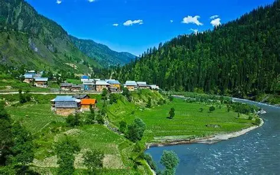
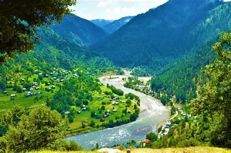
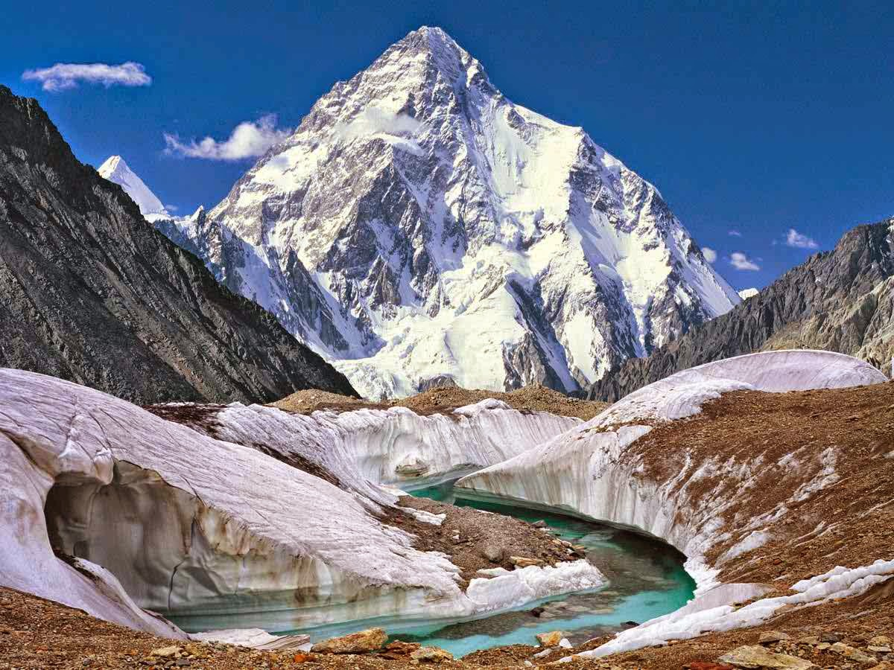
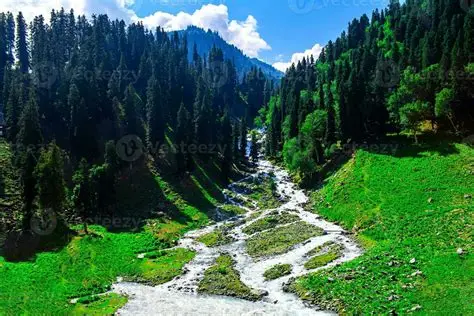
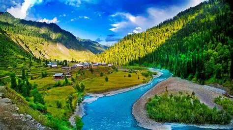
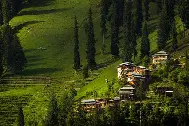
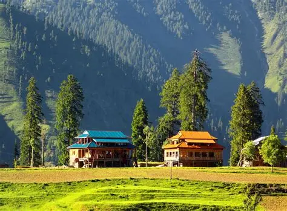
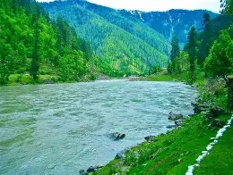
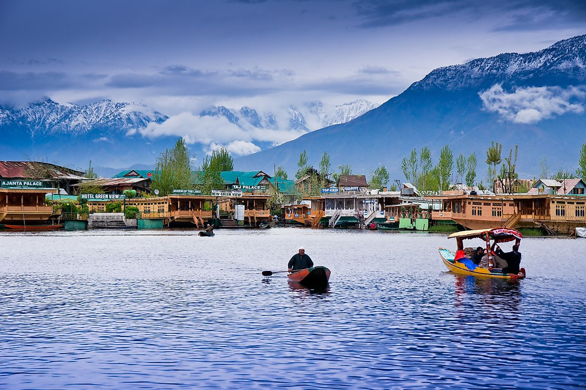

The Kashmir Valley, also known as the Vale of Kashmir, is surrounded by the ranges of the Himalayas, bounded on the southwest by the Pir Panjal Range and on the northeast by the Greater Himalayan Range. The Himalayas are located to the north of Kashmir, and they not only enhance the natural beauty of the region but also significantly contribute to its geographical and envionmental importance. Snow covered peaks, waterfalls and glaciers keep Kashmir green and fertile.








